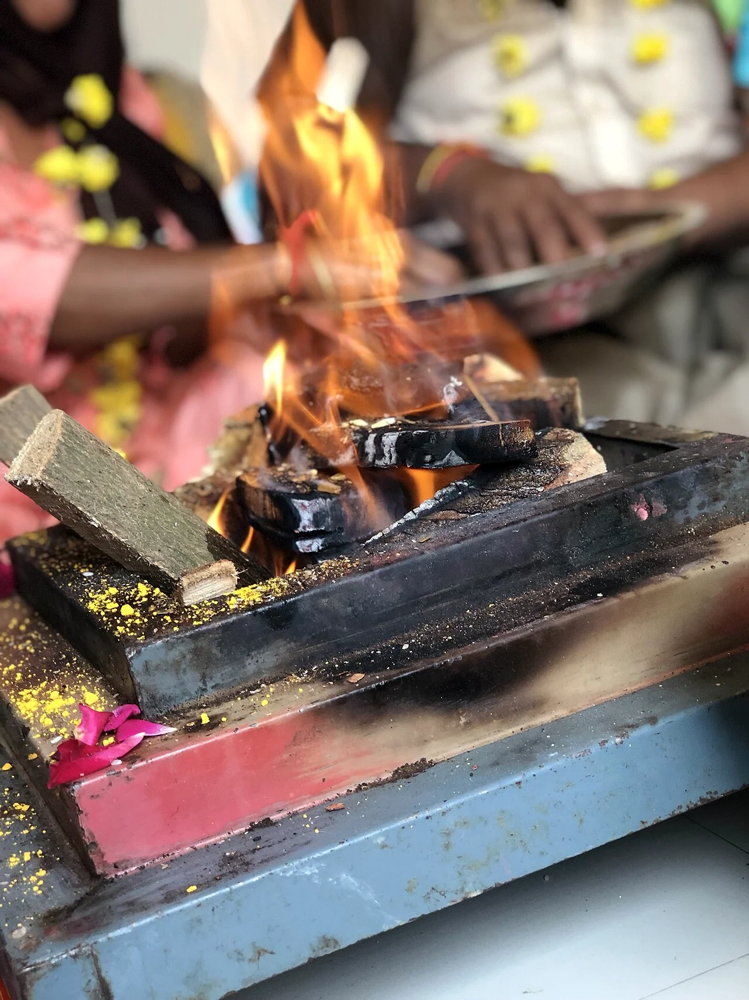
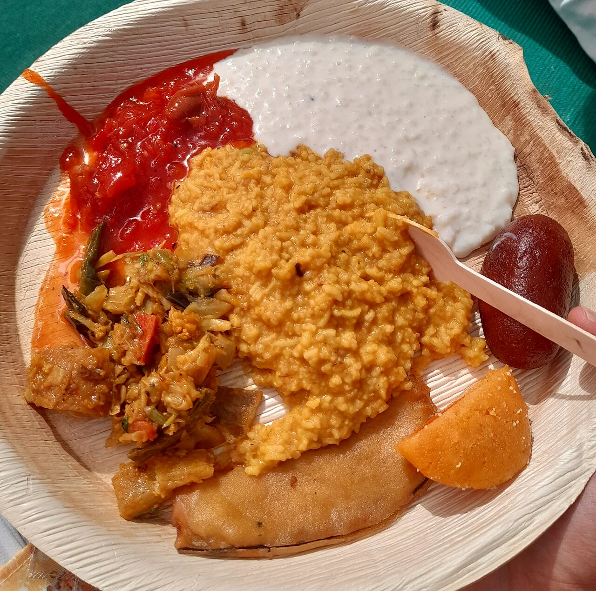

समय
चारा देना, सफ़ाई, सफ़ाई-देखभाल और गायों के पास बैठना।
हमारी सेवा
एक भक्ति के अनेक स्वरूप — गौ सेवा, अग्निहोत्र, पर्यावरण, संस्कृति, समाज कल्याण और आरोग्य।

हमारा कार्य
हम जो करते हैं, उसे समझाने के लिए कठिन शब्दों की आवश्यकता नहीं। हम भोजन देते हैं। हम देखभाल करते हैं। हम सुरक्षा देते हैं। हम एक साथ आते हैं। हम सिखाते हैं। हम सेवा करते हैं। और इसमें हम पाते हैं कि हमें देने से कहीं अधिक मिलता है।

गौ सेवा
हर सुबह चारा और ताज़ा जल से शुरू होती है। दिन भर हमारी टीम और स्वयंसेवक गायों-बछड़ों की आवश्यकताओं का ध्यान रखते हैं — स्वच्छ आश्रय, सफ़ाई, कोमल व्यवहार और आवश्यकता पड़ने पर चिकित्सकीय सहयोग। सड़क पर घायल हुई गायें, माँ से बिछड़े बछड़े और वे वृद्ध गायें जो अब चर नहीं सकतीं, उनके लिए देखभाल अधिक धीमी और निकट होती है: प्राथमिक उपचार, पशु चिकित्सक से परामर्श, मुलायम बिछावन और स्थिर होने तक हाथ से भोजन।

अग्निहोत्र एवं यज्ञ
अग्निहोत्र और हवन पीढ़ियों से हमारी दैनिक और उत्सवी साधना का हिस्सा रहे हैं। हम उन्हें स्वच्छ सामग्री, सरल अनुशासन और पूरे ध्यान से अर्पित करते हैं — शांति के लिए, सभी जीवों के कल्याण के लिए और अपने आसपास की मिट्टी तथा वायु की सेहत के लिए प्रार्थना के रूप में। हम कोई चिकित्सकीय दावा नहीं करते; जो मूल्य हम पाते हैं वह आध्यात्मिक है, और जो अनुशासन यह माँगता है वह सच्चा है।

पर्यावरण
गौ सेवा को भूमि सेवा से अलग नहीं किया जा सकता। हम पौधे लगाते और सींचते हैं, पीपल, नीम और बरगद लगाने को प्रोत्साहित करते हैं — ऐसे वृक्ष जो पीढ़ियों तक छाया, फल और आश्रय देते हैं — और अपने आसपास की स्वच्छता बनाए रखते हैं। हम हर परिवार को यह भी प्रेरित करते हैं कि वह सिंगल-यूज़ प्लास्टिक कम करे और अपना कपड़े का थैला तथा स्टील की बोतल साथ रखे।

संस्कृति
हवन, कथा, भजन और सत्संग सेवा से अलग नहीं; वे उसकी श्वास हैं। हमारे मासिक आयोजन श्रद्धालुओं को प्रार्थना, चिंतन और समाज के लिए एक साथ लाते हैं। युवाओं को दर्शक नहीं, सहभागी के रूप में आमंत्रित किया जाता है — मंत्र, अनुशासन और सम्मान को जीवन में उतारकर सीखने के लिए।

समाज
गौ सेवा हमारे मोहल्लों, युवाओं और साझा स्थानों के स्वास्थ्य से जुड़ी है। हम स्वच्छता अभियानों, सामूहिक आयोजनों और स्थानीय ताने-बाने को मज़बूत करने वाली पहलों में भाग लेते हैं। जब हम धरती और एक-दूसरे की देखभाल करते हैं, तब हम गौ माता की भी देखभाल करते हैं।

आरोग्य
कामधेनु आरोग्य संस्थान की भावना से हम आयुर्वेद और पारंपरिक देखभाल से प्रेरित स्वास्थ्य अभ्यासों को प्रोत्साहित करते हैं — सदैव योग्य चिकित्सकीय सलाह के साथ, उसके विकल्प के रूप में कभी नहीं। हमारा ध्यान कोमल है: बेहतर दैनिक आदतें, अधिक जागरूकता और करुणामय सहयोग।
आपका सहयोग कैसे सहायक है
चारा देना, सफ़ाई, सफ़ाई-देखभाल और गायों के पास बैठना।
चारा, जल, औषधि, आश्रय की देखभाल और पशु चिकित्सा।
डिज़ाइन, फ़ोटोग्राफ़ी, लेखा, पशु चिकित्सा ज्ञान, शिक्षण, आउटरीच।
समाज कल्याण
सम्मान, सबके साथ।
उन लोगों के लिए सहयोग, जिन्हें अक्सर दायरे के किनारे छोड़ दिया जाता है।
सेवा गौशाला के द्वार पर समाप्त नहीं होती। श्रद्धालुओं के सहयोग से हम दिव्यांगजनों और संघर्षरत परिवारों तक पहुँचते हैं — सम्मान, गोपनीयता और बिना किसी अपेक्षा के।
दिव्यांगजन सहयोग
गतिशीलता के साधन, पहुँच में सहायता और दिव्यांगजनों के लिए धैर्यपूर्ण सान्निध्य — ताकि सम्मान कभी बाद की बात न रहे।
वस्त्र और कंबल
मौसमी वस्त्र, गर्म कंबल और दैनिक आवश्यकताएँ उन परिवारों और बुजुर्गों के साथ साझा की जाती हैं जिन्हें इनकी आवश्यकता है, विशेषकर सर्दी से पहले।

भोजन सहयोग
सामूहिक भोजन, सूखा राशन सहयोग और पर्वों का प्रसाद उन सबके साथ साझा किया जाता है जो भूखे आते हैं। किसी से यह नहीं पूछा जाता कि वे क्यों आए।
फ़ोटो: Parnaval · CC BY-SA 4.0
सहयोग क्षमता अनुसार और सदैव सहायता पाने वाले व्यक्ति की सहमति तथा गरिमा के साथ दिया जाता है।